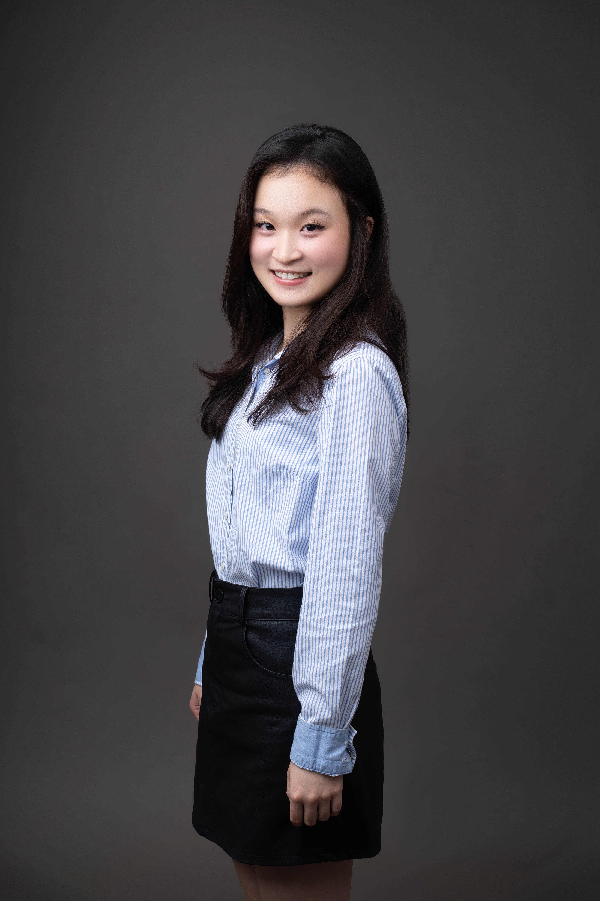
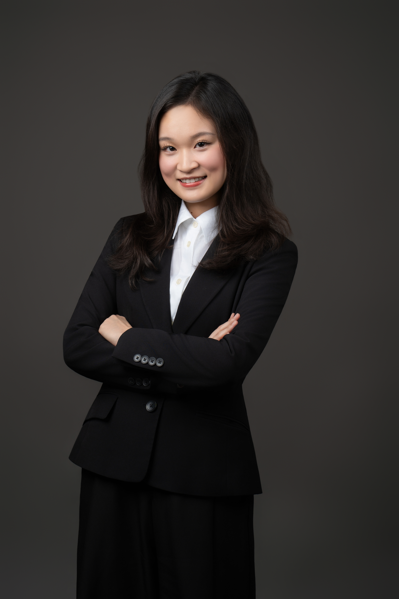

About Me
我是詹芷菱（Joyce），東吳大學企管系學生，同時念資料科學輔系，修了金融科技和跨域創新創業的學程。這個組合不是設計出來的，而是在實際做事的過程中，逐漸發現自己需要這幾個維度才能把問題看得更完整。
從高三開始自己經營代購品牌，到在商業分析社擔任副社長並接下台灣知名球隊企業合作專案擔任組長，再到在 Microsoft 執行觸及十萬人的跨校行銷計劃——我習慣把不確定的事情拆開來想清楚，再帶著大家一起做。不怕複雜，比較怕什麼都不做。
Experience
點擊展開每段經歷，了解實際參與的成果。
Projects
橫跨行銷影音、數據分析、商業策略與 AI 應用的完整實作成果。
擔任跨校專案組組長，帶領團隊以長短影音策略推廣 Microsoft 實習計劃，負責企劃、腳本到製作的完整流程。
執行 Copilot 跨校推廣，透過整合社群策略使主貼文觸及超過 100,000 人次，成功打入學生族群。
擔任組長，為長瑩科技製作結合 AI 技術的雇主品牌短影音。從主題發想、拍攝到後製剪輯，透過多層次轉場融合真人與 AI 視覺素材。
利用 Google Dialogflow 開發料理智慧助理，建構 Intents 意圖識別系統與烹飪知識庫，使用者輸入「我想做滷肉飯」即可取得食材與步驟。
針對鈺齊（國際運動鞋製造商）財務數據，導入隨機森林等機器學習模型取代傳統 OLS 迴歸，透過特徵重要性分析識別 ROA 為核心驅動指標，提供管理層績效預警依據。
爬取 PTT Japan_Travel 等多個看板近一個月發文，比較東京、大阪、福岡、北海道、名古屋的討論熱度，以群組柱狀圖呈現跨看板洞察，發現東京在 Japan_Living 板高達 127 篇文章。
與日本立命館亞洲太平洋大學學生合作，為虛擬公司 NUSA Rail 規劃循環經濟策略。擔任主要協調者，規劃跨時區共用時程，整合不同文化觀點，確保團隊目標一致，最終獲得佳績。
運用 Kotter 八步驟分析昇恆昌疫情後招募策略。面對缺乏數據的挑戰，擔任組長主動邀約公司主管進行一對一深度訪談，獲取第一手資訊，結合理論與實戰訪談資料完成報告。
帶領跨科系團隊開發整合碳排放管理、合規審查與碳權交易的一站式系統，採用大數據與 AI 追蹤長期減碳效果，支援台灣《氣候變遷因應法》合規需求。
以無線充電產品為題，負責客戶需求與競爭者分析、社群媒體廣告投放與數據優化。量化成果：廣告點擊率 +30%、客戶轉換率 +15%、社群追蹤者 +50%、季度銷售額 +20%。
Skills & Expertise
管理 × 行銷 × 數據的複合能力，是我在每個角色裡真正在用的工具組。
Education
跨領域學習是刻意選擇——讓管理思維和資料能力在同一個腦袋裡對話。
Activities & Volunteer
在課堂以外，持續拓展國際視野、實踐社會關懷。
代表東吳大學赴日本，與亞洲各國學生共同探討「宗教與人工智慧」的跨領域議題，深入思考 AI 的倫理與價值問題。作為台灣代表團一員，主導介紹台灣棒球文化，進行文化輸出與交流。
連續三年利用暑假於台灣中部推廣英語教育，與台美夥伴共同設計包含生活對話、文化體驗、桌遊與歌曲的課程。更特別進入台中市惠明盲校，親手製作點字與浮雕字母單字卡等觸覺教材，為視障學生開創獨特的英語學習路徑。
Contact